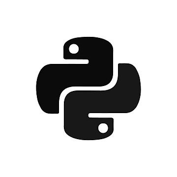

Programming Languages

Python
Used for data analysis, automation, and backend development.

JavaScript
Essential for web development, interactive UI design, and front-end scripting.

HTML & CSS
Fundamental for structuring and styling web pages.
SQL
Used for managing and querying databases efficiently.